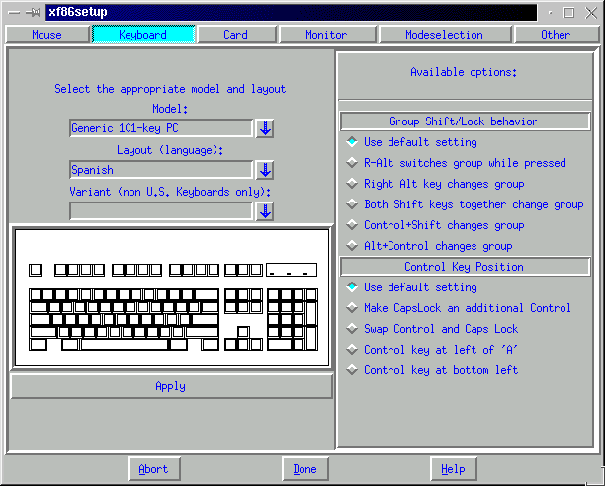
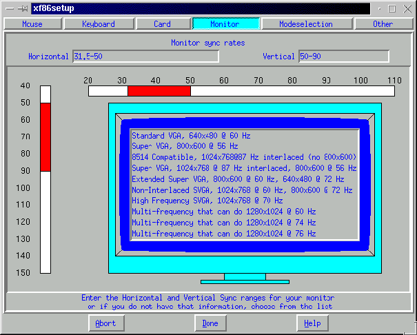

[ ^ ]
Si ya existiera información en el directorio /usr/X11R6/, ya lo tendrás instalado, si no quieres actualizar tu X-Window, saltate a la configuración.
Pincha aquí para ver: Lista de paquetes .tar.gz para X-Window
- Borra toda la información (previa copia de seguridad de la documentación o programas que se cree oportuno) que hay en el directorio /usr/X11R6
- Ejecutar el script de preinstalación `preinst.sh'
- Ir descomprimiendolos los paquetes mediante la orden: "tar xvfz <nombre del fichero.tgz>"
- Ejecutar el ficheros de postinstalación `postinst.sh'
- Obligaremos al sistema a sincronizar el fs, mediante la orden: "sync; sync"
- Y a releer la tabla de librerías mediante: "ldconfig"
¡ACTUALIZACIÓN TERMINADA!
Una vez que tengamos definido el ratón, lo haremos con el teclado.

Una vez definido el teclado, lo haremos seleccionando nuestra tarjeta
de vídeo.
Ahora es buen momento para ir a por el libro que suele acompañar
el equipo cuando lo compraste, que comentar las especificaciones técnicas
de tu tarjeta de vídeo, velocidades y procesos, también deberás
tener a mano el que vendría con el monitor.
Y seleccionaremos la marca y modelo de nuestro monitor o en su defecto,
especificaremos las características del nuestro si es un "Clónico
Digital"

Una vez que tengas configurado el sistema obtendrás un fichero
que se almacena en: /etc/X11, con el nombre: XF86Config similar a los ejemplos:
xinit
Si va mal pulsa: "Ctrl+Alt+Tecla de retroceso", para salir
y reconfigure otra vez
cuando se empiece a ver bien, escriba
startx
Si al salir, ve caracteres extraños, ponga:
setfont
Y se restablecerá la pantalla
setfont lat1u-16.psf
Se restablecerá la pantalla con las características de
las fuentes en Castellano.
¡Ya tiene X-Window!
[ ^ ]
[ ^ ]
Nos alegramos que hayas decidido por instalar X-Window, en este tutorial NO vamos a explicar como instalar X-Window en una u otra distribución, lo haremos como se hace en .TAR.GZ, y como se actualiza, en caso de haber querido bajarte unas nuevas librerías.Tenemos que avisarte que X-Window es GNU, :), y que existen también entornos gráficos comerciales para Linux, pero sus librerías no son XFree86, por lo que deberás pagar por tener unas librerías para tu entorno gráfico, no podemos decirte (por no usarlas) si en dichas entornos gráficos puedes cambiar el gestor de ventanas